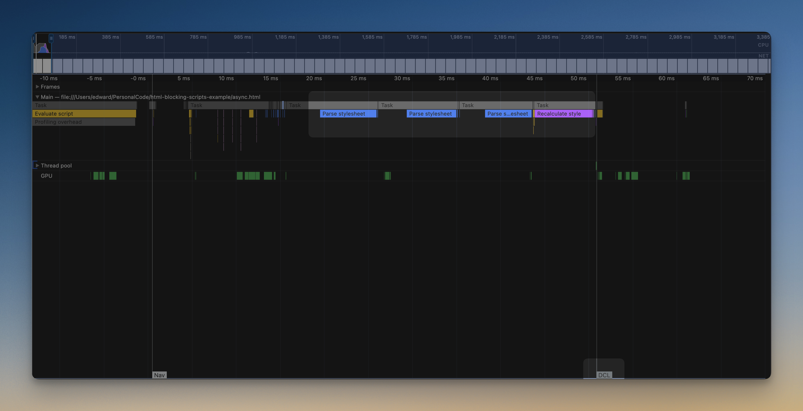
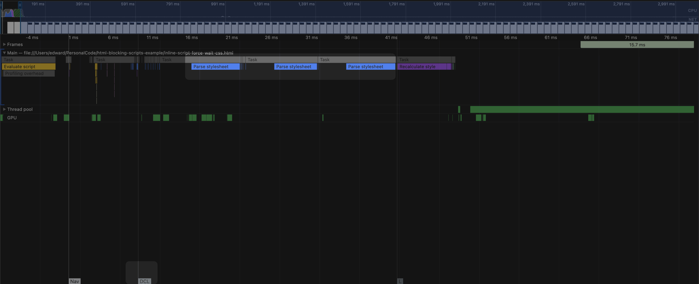

This is how inline script can cause browser wait for css to load before DOMContentLoaded
With inline script
* pay attention on DCL event order/time

Without inline script
* pay attention on DCL event order/time
